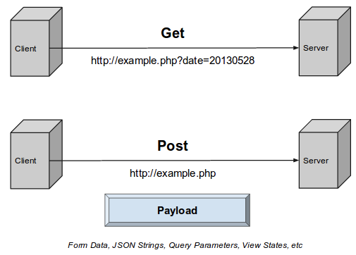

Content-type 一般只存在於 Post 方法中，因為 Get 方法是不含 “body” 的，它的請求參數都會被編碼到 url 後面，所以在 Get 方法中加 Content-type 是無用的。
我們知道，HTTP 協議是以 ASCII 碼 傳輸，創建在 TCP/IP 協議之上的應用層規範。規範把 HTTP 請求分為三個部分：狀態行、請求頭、消息主體。
協議規定 POST 提交的數據必須放在消息主體（entity-body）中，但協議並沒有規定數據必須使用什麼編碼方式。實際上，開發者完全可以自己決定消息主體的格式，只要最後發送的 HTTP 請求滿足上面的格式就可以。
但是，數據發送出去，還要服務端解析成功才有意義。一般服務端語言如 php、python 等，以及它們的 framework，都內置了自動解析常見數據格式的功能。服務端通常是根據請求頭（headers）中的 Content-Type 字段來獲知請求中的消息主體是用何種方式編碼，再對主體進行解析。所以説到 POST 提交數據方案，包含了 Content-Type 和消息主體編碼方式兩部分。
application/x-www-form-urlencoded
最常見 POST 提交數據的方式，瀏覽器的原生 <form> 表單，如果沒有設置 enctype 屬性，就會以默認以此方式提交數據。
1 | POST http://www.example.com HTTP/1.1 |
首先，Content-Type 被指定為 application/x-www-form-urlencoded；其次，提交的數據按照 key1=val1&key2=val2 的方式進行編碼，key 和 val 都進行了 URL 轉碼。大部分服務端語言都對這種方式有很好的支持。例如 PHP 中，$_POST[‘title’] 可以獲取到 title 的值，$_POST[‘sub’] 可以得到 sub 數組。
很多時候，我們用 Ajax 提交數據時，也是使用這種方式。例如 JQuery 和 QWrap 的 Ajax，Content-Type 默認值都是application/x-www-form-urlencoded;charset=utf-8。
multipart/form-data
我們使用表單上傳文檔時，必須讓 form 的 enctyped 等於這個值。
1 | POST http://www.example.com HTTP/1.1 |
首先生成了一個 boundary 用於分割不同的字段，為了避免與正文內容重複，boundary 很長很複雜。然後 Content-Type 裏指明瞭數據是以 mutipart/form-data 來編碼，本次請求的 boundary 是什麼內容。
消息主體裏按照字段個數又分為多個結構類似的部分，每部分都是以 –boundary 開始，緊接着內容描述信息，然後是回車，最後是字段具體內容（文本或二進制）。如果傳輸的是文檔，還要包含文檔名和文檔類型信息。消息主體最後以 –boundary– 標示結束。一般用来上傳文件。
application/json
由於 JSON 規範的流行，越來越多人把它當作 header
提交 JSON 字符串：
1 | var data = {'title':'test', 'sub' : [1,2,3]}; |
最終發送的請求；
1 | POST http://www.example.com HTTP/1.1 |
這種方案，可以方便的提交複雜的結構化數據，特別適合 RESTful 的接口。各大抓包工具如 Chrome 自帶的開發者工具、Firebug、Fiddler，都會以樹形結構展示 JSON 數據。但也有些服務端還沒有支持這種方式，例如 php 就無法通過 $_POST 對象從上面的請求中獲得內容。需要自己手動處理下：在請求頭中 Content-Type 為 application/json 時，從 php:// input 裡獲得原始輸入流，再 json-decode 成對象。
text/xml
XML-RPC （XML Remote Procedure Call）協議簡單、功能夠用，各種語言的實現都有。它的使用也很廣泛，但已經逐漸被上面幾種方法取代。
1 | POST http://www.example.com HTTP/1.1 |
總結
Post 請求數據的時候有兩種，傳json 的話就是 application/json，不傳 json 的話就是 application/x-www-form-urlencoded，傳文件的話用 multipart/form-data
- Post title：【API】請求頭 Content-type
- Post author：Neil Yang
- Create time：2019-06-12 00:00:00
- Post link：https://des86532.github.io/2019/06/12/API/content-type/
- Copyright Notice：All articles in this blog are licensed under BY-NC-SA unless stating additionally.